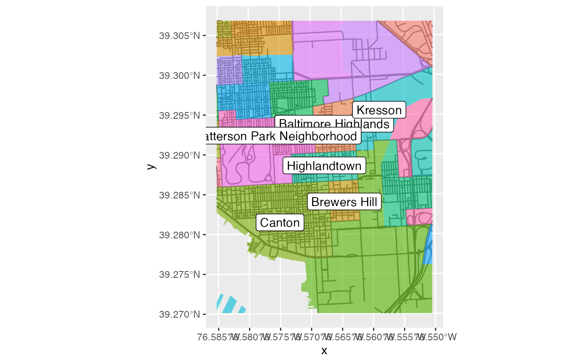
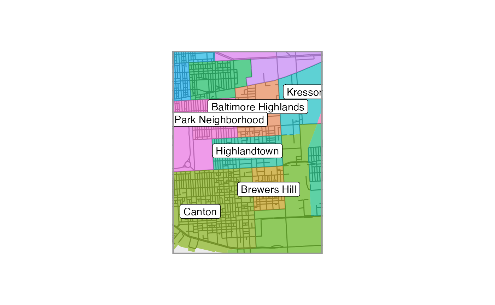

Map layout and themes with ggplot2 utility functions
ggsave_ext.RmdGetting started
Set some parameters
params <-
list(
paper = "letter",
margin = "narrow",
fontfamily = "Georgia",
orientation = "portrait",
neighborhood = "Highlandtown",
dist = NULL,
diag_ratio = 1
)
params$asp_block <-
get_asp(paper = params$paper,
margin = params$margin,
orientation = params$orientation,
block_asp = TRUE)
get_neighborhood <- function(name = NULL, location = NULL) {
get_location(
type = "neighborhoods",
package = "mapbaltimore",
name = name,
location = location
)
}
# Use the get_neighborhood wrapper function to pull a neighborhood
neighborhood <-
get_neighborhood(name = params$neighborhood)
nearby_neighborhoods <-
get_neighborhood(
location = neighborhood
)
neighborhood_bbox <-
st_bbox_adj(
x = neighborhood,
dist = params$dist,
diag_ratio = params$diag_ratio,
asp = params$asp_block
)Create a basemap
basemap <-
ggplot() +
layer_location_data(
location = neighborhood_bbox,
data = "streets",
package = "mapbaltimore",
color = "gray40"
) +
layer_location_data(
location = neighborhood_bbox,
data = "neighborhoods",
package = "mapbaltimore",
mapping = aes(fill = name),
color = NA,
alpha = 0.6
) +
scale_fill_discrete() +
layer_location_data(
location = neighborhood_bbox,
data = "neighborhoods",
package = "mapbaltimore",
geom = "label",
mapping = aes(label = name),
fn = ~ dplyr::filter(.x,
name %in% nearby_neighborhoods$name,
type == "Residential"),
fill = "white",
color = "black"
) +
guides(
fill = "none"
)
basemap
Add a neatline and margins
neighborhood_map <-
basemap +
# Draw a neatline around the selected neighborhood
layer_neatline(
data = neighborhood,
diag_ratio = 0.5,
asp = params$asp_block,
size = 1.5,
color = "gray60",
expand = TRUE
) +
theme_margin(
paper = params$paper,
margin = params$margin,
orientation = params$orientation,
fill = "white",
color = NA
)
neighborhood_map
Save map with ggsave_ext
ggsave_ext(
plot = neighborhood_map,
name = "Neighborhood map",
label = params$neighborhood,
title = "Map of {params$neighborhood} and surrounding area",
author = "Eli Pousson",
paper = params$paper,
orientation = params$orientation,
device = "pdf",
path = tempdir(),
exif = TRUE,
bg = "white"
)
#> 'perl' '/Library/Frameworks/R.framework/Versions/4.1/Resources/library/exifr/exiftool/exiftool.pl' -Author='Eli Pousson' -Title='Map of Highlandtown and surrounding area' -CreateDate='2022:02:16 23:07:38' -overwrite_original '/var/folders/z9/kd515wrs3x75_d8l637gx3cc0000gr/T//RtmpMwm3Kx/2022-02-16_highlandtown_neighborhood_map.pdf'